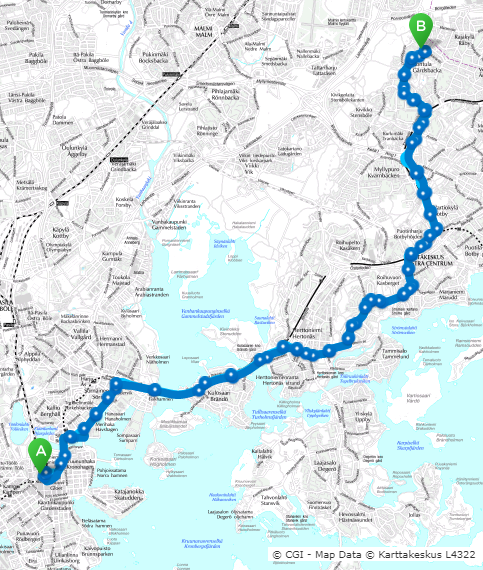
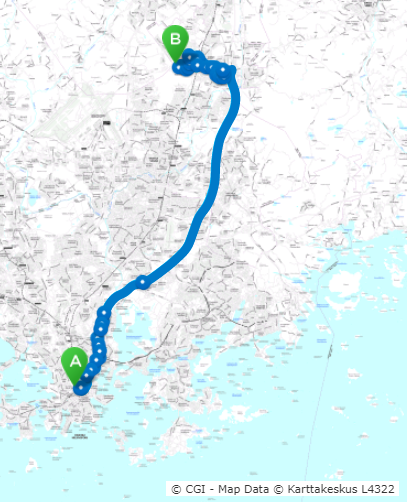
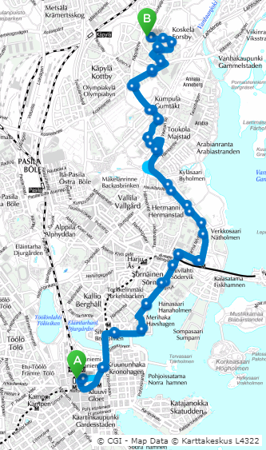
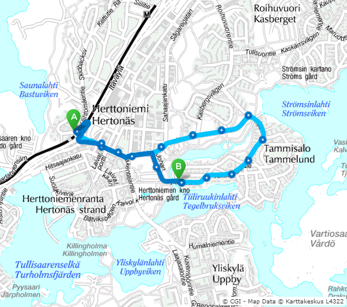
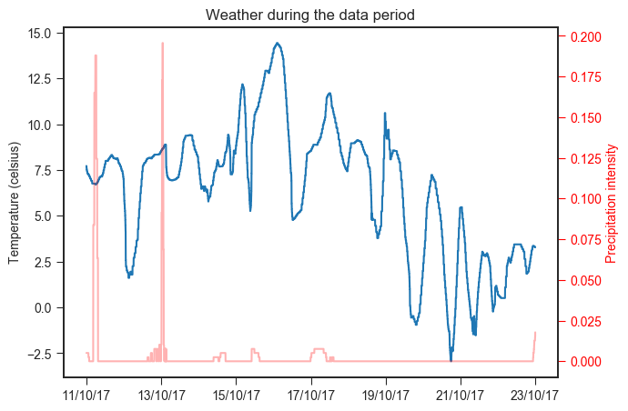
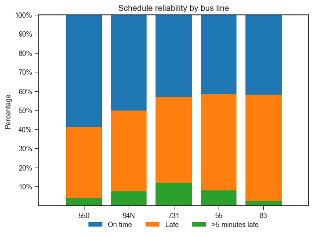
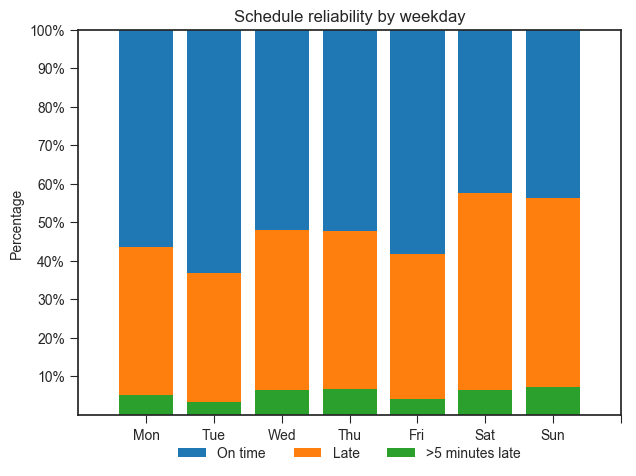
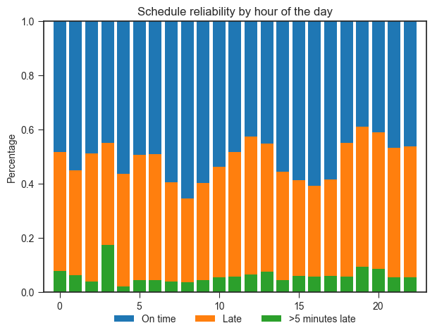

Every commuter knows that weather can have a huge effect on whether public transport schedules hold up on any given time. Especially here in Finland, where the weather can be very unpredictable at times. We decided to figure out which factors affect whether buses run on time or not on any given day.
We decided to use HSL Live API data. Since they don't offer ready-made datasets, we built a script to collect the live data every minute over the course of 13 days, starting from October 10th and ending on the 23rd.
On top of public transport data, we also collected weather data from Helsinki with the DarkSky API. Weather data was collected every 20 minutes over the same period as the HSL data.
At the end of our data collection, we had a huge amount of data. The HSL data in particular was quite big (3.5 Gb in total). The data was also quite messy, probably due to different vehicles (our data included over 7000 unique vehicles) transmitting differing information, some didn't seem to be operational at all. Due to this, we could not use tram or train data, since most of it was corrupted. Our original plan had been to pick a route from each type of travel, but this was deemed impossible. Therefore we selected 5 bus routes at (semi-)random. The chosen routes are shown below.
Route 550 (60 min total)
Routes 94N (33 min) and 731 (50 min)
Routes 55 (25 min) and 83 (10 min)
After this, we removed all variables that were clearly faulty (such as long string values as delays and variables that didn't seem to be in use in most of the vehicles). We decided not to impute missing datapoints but instead remove corrupted data, since there was a lot of data. We noticed that some vehicles were repoting delays of over 80 minutes, which had to be a mistake. We think this was probably due to the location info being transmitted even when the bus was not on route or even standing at the bus depot. We filtered these values out by only including delays of more than -900 seconds (the bus being 15 minutes early) and 1800 seconds (30 min late).
Then we combined the HSL data with the weather data for each timepoint. Below you can see the weather during the data collection period. Unfortunately there is not a lot of data from rainy days and no data from snowy days. If only we had collected data from a week later, precipitation may have had a bigger impact on whether a bus was late or not.

Below are some summary statistics from our 5-route sample.
Mean delay |
Portion of the time buses were more than 1 min late |
Mean temperature |
| 1.24 minutes | 47% | 6.4 C° |
Our end goal was to determine whether a given bus would be late or not. For this, we needed to choose a discriminative classifier. Below, you can see the accuracy of various methods we attempted:
| Method | Accuracy |
| Baseline (always guess late) | 0.52 |
| Logistic regression | 0.53 |
| Desision tree | 0.93 |
| Random forest | 0.95 |
The baseline is the accuracy when always guessing the most likely outcome (in this case, that the bus will be late). Any classifier worthwhile needed to beat this.
Logistic regression was the simplest classifier we attempted, but as we can see, did not result in much improvement. The decision tree resulted in a dramatic improvement in accuracy, with a random forest ensemble method pushing the accuracy up to 95%. This is ultimately the model we selected.
The table below shows the importance of each feature, as determined by the model:
| Feature | Importance |
| Vehicle | 0.271155 |
| Time | 0.159677 |
| Longitude | 0.134082 |
| Latitude | 0.099188 |
| Ozone | 0.031733 |
| WindSpeed | 0.031116 |
| WindGust | 0.030285 |
| WindBearing | 0.029432 |
| HourOfDay | 0.028464 |
| ApparentTemperature | 0.025696 |
| DewPoint | 0.024440 |
| CloudCover | 0.024254 |
| Line | 0.022343 |
| Pressure | 0.021275 |
| Temperature | 0.019657 |
| Humidity | 0.015845 |
| Visibility | 0.012251 |
| DayOfWeek | 0.011092 |
| UvIndex | 0.003230 |
| Speed | 0.001609 |
| PrecipProbability | 0.001498 |
| PrecipIntensity | 0.001244 |
| PrecipType | 0.000433 |
From this, we can infer several things. The first is that the most important feature for determining whether the bus is late is the vehicle itself. Each individual vehicle (whether it be a bus, train, or ferry) is given a unique vehicle ID. Why does the individual vehicle affect lateness so much? We’re not sure. Perhaps each vehicle is assigned to a specific driver. Since different drivers have different driving styles, it would explain a lot. Another possible explanation is simply that certain vehicles give faulty readings. This is something we’ve noticed when cleaning up the data. Many vehicles would consistently report delay values that made no sense. We removed these extreme outliers, but it’s possible that we were not thorough enough.
Another thing we can gather from these results is that latitude and longitude are important factors in determining whether a bus will be late. This makes sense since there are areas in the city that have higher traffic than others.
Ozone is another large factor, which seems odd at first glance. However, there is a very reasonable explanation for this. Ozone in the lower atmosphere is produced when sunlight reacts with hydrocarbons and nitrogen oxides produced by vehicle emissions.
Below are some examples of the effects of some of the factors that seemed intuitively the most likely causes for variation in schedule reliablity based on intuition and experience.



To improve our model, we would need to collect a lot more data, for at least a year. Due to the time of year of our data collection (mid to end October) our data didn’t include extreme temperatures or snowy days. Now our data size was manageable and we could do the analyses on our laptops, but we would need distributed systems and a lot more computing power to analyze a full year’s worth of data.
Train data could also be gathered from VR for further analysis. We didn’t try to predict lateness with these models but a real world app could take a weather forecast and use it for prediction. With our methods, you can already tell which lines are more prone to be late and when.